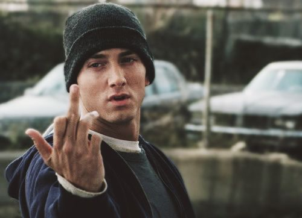

Eminem : un homme révolté

Untouchale est un titre issu de l'album : « Revival ». Traduit en français, le nom de cet album veut dire "renaissance" : il s'agit donc d'une renaissance pour Eminem au niveau artistique mais également une renaissance de son pays et un positionnement contre la politique menée par Donald Trump. Il faut simplement voir la couverture de l'album pour comprendre.
De loin on voit un simple drapeau des Etats-Unis mais si on regarde bien on peut voir Eminem lui-même posant sa main sur sa tête comme s’il était désespéré des problèmes socio-politiques de son pays.
Afin de voir la violence de la musique, on revient sur quelques paroles assez marquantes :
Il s'agit d'une musique assez longue (6 min) découpé en 2 parties. Etant un rappeur très engagé, Eminem n’hésite pas à parler de sujet polémique, d'ailleurs, c'est ce qui fait tout son succès. Cette musique ne fait pas l'exception étant donné qu'il est loin de mettre tout le monde d’accord. Dans cette musique Eminem dénonce les injustices raciales au sein des Etats-Unis. Le titre de cette musique vient du fait, qu'étant une personne de couleur blanche, il se sent comme "intouchable" alors qu'au contraire les personnes de couleurs noirs, doivent se battre pour vivre comme des "blanc". Comme pour toutes musiques d'Eminem, il faut l’écouter plusieurs fois pour comprendre réellement le sens des paroles. Sur les 2 premiers couplets on peut voir qu'il est dans la peau d'une personne de couleur blanche et il dit tout ce que ces personnes pensent et dans le couplet suivant, il prend la position d'une personne de couleur noirs pour montrer ce que celles-ci en pensent.
Ainsi la punchline qui m'a le plus marquée est :
« Seems like, the average life span of a white man Is more than twice that of a black life span I wonder sometimes if it has a price scanner »
Cette phrase est très puissante car l'exemple illustre parfaitement son avis car sur un code barre il y a 2 fois plus d’espace blanc que de barres noires. Il compare donc, comment la société traitent les blancs et les noirs.
La réaction face à cet opus fut très mitigée : Certains disent qu’ils s’agissent du pire album de l'année et d'autres affirment qu'il continue de se battre pour l'égalité raciale.
Pour conclure avec ce titre, on peut voir qu'il s'agit d'une musique qui a su faire parler d'elle tant en bien qu'en mal, mais ce que l'on doit retenir c'est qu'Eminem affirme hautement son point de vue et que même après les critiques, il continuera toujours à dénoncer ce qui lui paraitra injuste.
SI-ABDELKADER Hamza
Like Toy Soldier est un titre peu connu du grand public tiré de son album « Encore ». Dans cette album, Eminem parle de lui, de sa vie privée, de son enfance, son ex-épouse, sa fille, mais également de sa vie professionnelle ou il parle de label et de maison de disque. Traduit en français ce titre est "Comme un Soldat Jouet", il montre ainsi qu'il existe une sorte de manipulation qui est exercé sur lui. Il s'agit d'une musique assez longue (près de 5 min 30) ou ils dénoncent les conditions déplorables des labels envers les artistes.
Il veut ainsi en finir avec cette tension présente entre maisons de disque et artistes. Ce qui est étonnant avec cette musique, c’est qu’elle fut prémonitoire car dans le clip on voit son ami tué par balle et ironie du sort, quelques mois plus tard il mourra dans les mêmes conditions lors d'une fusillade à Detroit.
Cette musique dénonce également les conflits mortels entre les rappeurs et veut ainsi leurs rendre hommage (Tupac, Notorious etc ...) car il est courant que les rappeurs s’insultent et ces insultes amènent à des guerres de clan entre artistes.
Eminem est donc un soldat car les soldats exécutent et se rendent sur le champ de bataille sous les ordres des capitaines (label). Par son brio, Eminem est conscient de ce fait et n'hésite pas à le faire savoir car il ne pouvait pas interférer entre ces querelles et se sentit bloquer entre 2 camps, d'où la raison de l'existence de cette musique. Ainsi, Like Toy Soldiers est à juste titre une œuvre d'art car l’ait qu'il abord un sujet sensible rend l'œuvre encore plus rare.
SI-ABDELKADER Hamza